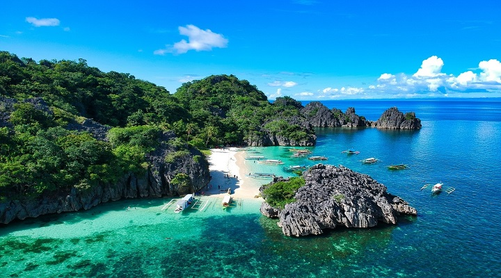

Caramoan is a rugged peninsula and group of islands located in the Camarines Sur province of the Bicol Region in the Philippines, famous for its dramatic limestone cliffs, powdery white sand beaches.
